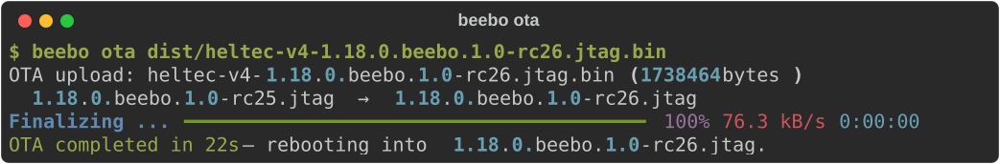

Update and Service a Node¶
Updating firmware and servicing a deployed node from the beebo command line. All beebo firmware changes are backward compatible with existing MeshCore companion applications.
Over-The-Air (OTA) FW Update¶
Once a beebo firmware is resident in the node, you can update the firmware remotely without physical access in around 30 seconds.
For example, to flash a firmware image when connected through any of the available transports, run beebo ota with the path of the .bin file:

The CLI shows dual progress bars: Transfer tracks bytes sent to the device, Flashing tracks bytes written to the OTA partition. Chunk and buffer sizes are printed before the transfer starts.
The device validates the new image on first boot and rolls back automatically if it fails to start.
Flash speed varies by transport. The firmware file is split into chunks and each chunk is sent through a synchronous round trip (send → flash write → OK), so the bottleneck is the number of round trips times the per-chunk SPI flash overhead.
- WiFi uses 8 KB chunks (about 215 round trips for 1.7 MB) and typically completes in under a minute. This is the recommended transport for OTA updates.
- USB also uses 8 KB chunks.
- BLE uses 174-byte chunks (about 10,000 round trips) and is the slowest due to additional inter-write spacing.
Note that the only benefit of using USB OTA (which really is not over-the-air but rather Over-The-Cable) over regular USB flashing with esptool is that it does not require manually putting the board in program mode as is the case for the Heltec V4.3 and maintains the RTC clock, apart from a skew of few seconds.
Verify Firmware Version¶
After flashing or OTA, verify the running firmware version.
For instance using WiFi on the beebo node:
$ beebo status node
Node
╭───────────┬──────────────────────╮
│ Name │ Beebo │
│ Role │ companion │
│ Model │ Heltec V4.3 Headless │
│ Version │ 1.18.0.beebo.1.0 │
│ Build │ 15-Jul-2026 │
│ Transport │ TCP - myssid │
│ WiFi RSSI │ -45 dBm ▂▄▆█ │
╰───────────┴──────────────────────╯
OTA Transfer and Priority Mode¶
Incoming OTA chunks are written straight to flash via esp_ota_write, which batches partial sectors internally — no app-level PSRAM buffering. It uses the standard ESP-IDF dual-partition scheme: the new image is written to the inactive OTA partition while the current firmware keeps running, then esp_ota_set_boot_partition switches over on reboot.
beebo ota has a --priority flag, on by default and honored on every transport (BLE, USB and WiFi): the node skips normal radio and mesh dispatch for the duration of the upload, so the OTA stream is not delayed by loop work, trading mesh responsiveness for upload speed. Live mesh traffic can slow an upload several times over without it. Use --no-priority to keep servicing the radio during the transfer.
Admin Transport Control¶
The beebo admin <target> transport [usb|ble|tcp [on|off]] subcommand reads or toggles a node's transports remotely over the mesh admin channel, and beebo admin <target> transport (or get transports) queries all three at once — useful for flipping WiFi on for OTA on a deployed repeater and back off afterward without physical access. Admin requests retry automatically on the underlying request/response exchange.
This enables servicing repeater nodes very effectively through TCP, by switching TCP on only when needed, servicing, and turning it off leaving the repeater a lower power idling state.
For instance, the workflow to update the gatto repeater node FW quickly through the beebo companion node, while both nodes are within WiFi reach (perhaps a mobile AP if in the nodes are in the sticks):
# Turn on tcp on gatto through the mesh.
# We omit -t beebo because it is our default transport and node.
$ beebo admin gatto transport tcp on
OK - tcp is now ON
# Update gatto to the release image
$ beebo -t gatto ota heltec-v4-1.18.0.beebo.1.0.bin
OTA upload: heltec-v4-1.18.0.beebo.1.0.bin (1768016 bytes)
1.17.1.beebo.1.0 (Build: 14-Jul-2026) → 1.18.0.beebo.1.0
Finalizing ... ━━━━━━━━━━━━━━━━━━━━━━━━━━━━━━━━━━━━━━━━ 100% 52.6 kB/s 0:00:00
OTA completed in 33s — rebooting into 1.18.0.beebo.1.0.
# Turn off TCP on gatto to restore average idle current of 50mA instead of
# idle current pf 125mA with TCP/BLE radio on.
$ beebo -t gatto settings repeater.node.transport.tcp off
# Or alternatively through the mesh:
$ beebo admin gatto transport tcp off
OK - tcp is now OFF
Note that to toggle transports on and off, one can also use the MeshCore Phone and Desktop application admin cmd <target> "<cmd>", where commands are get {usb|ble|tcp} or set {usb|ble|tcp} {on/off}.